Best knots for
Household
Parcels, bags, washing lines, tie-downs and shoelaces. The everyday knots that save string and temper.
- Binding knots
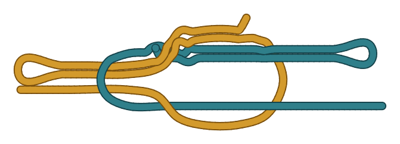
Bow Knot
The knot on your shoes: a square knot with both ends slipped.
●○○ Easy - Splices & whippings
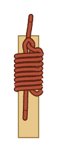
Common Whipping
Turns of thin twine bound round a rope end to stop it unravelling.
●○○ Easy - Hitches
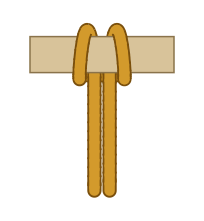
Cow Hitch
A bight of rope dropped round a rail with both legs pulled through it.
●○○ Easy - Stopper knots

Double Overhand Knot
An overhand knot with one extra turn.
●○○ Easy - Loops

Double Overhand Noose
A running loop held by a double overhand tied round the standing part.
●○○ Easy - Braids & sennits
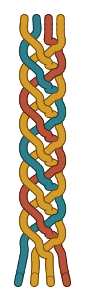
Four-Strand Flat Braid
A flat braid of 4 strands.
●○○ Easy - Binding knots
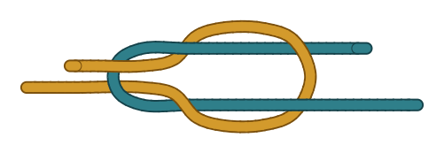
Granny Knot
The square knot tied wrong: both halves twisted the same way.
●○○ Easy - Hitches
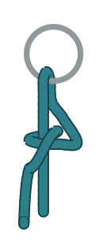
Half Hitch
The simplest hitch: the end goes round the standing part and across itself.
●○○ Easy - Hitches
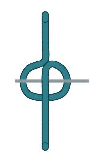
Marlinspike Hitch
A loop laid over the line with a spike or rod pushed through it: over the loop, under the line, over the loop.
●○○ Easy - Stopper knots
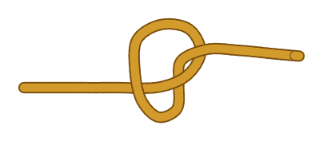
Overhand Knot
The simplest knot there is, and the first move of many others.
●○○ Easy - Loops

Overhand Loop
An overhand knot tied in a doubled rope.
●○○ Easy - Hitches
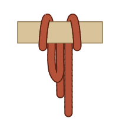
Pedigree Cow Hitch
A cow hitch made secure for a pull on one leg only: the free end is tucked back up between the legs and under the bight, so it cannot slide out..
●○○ Easy - Hitches
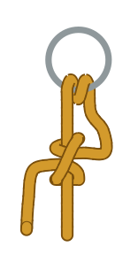
Round Turn and Two Half Hitches
A round turn on a ring or post takes the load while you finish with two half hitches round the standing part.
●○○ Easy - Bends
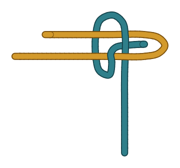
Sheet Bend
The everyday knot for joining two ropes, including ropes of different thickness.
●○○ Easy - Stopper knots
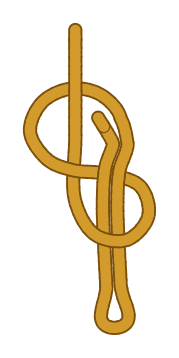
Slipped Figure-Eight Knot
A figure-eight finished with a bight, so a pull on the short end releases it.
●○○ Easy - Stopper knots
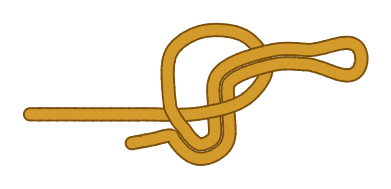
Slipped Overhand Knot
An overhand knot finished with a bight instead of the end, so one pull on the short end releases it.
●○○ Easy - Binding knots
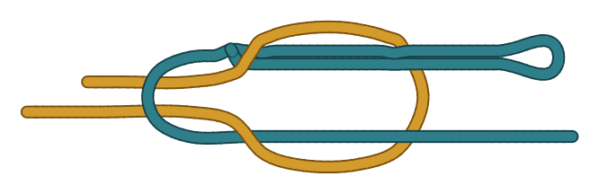
Slipped Square Knot
A square knot with one end pulled through as a bight.
●○○ Easy - Binding knots
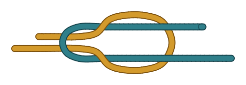
Square Knot
A flat binding knot for tying the two ends of one cord round something: a parcel, a bandage, a reefed sail.
●○○ Easy - Stopper knots
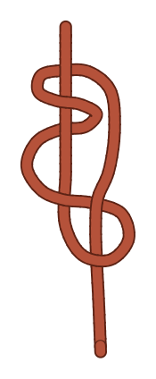
Stevedore Knot
A figure-eight with one more turn round the standing part.
●○○ Easy - Binding knots
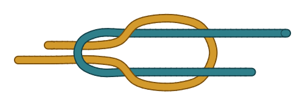
Thief Knot
It looks almost exactly like a square knot, but the two short ends come out diagonally opposite each other.
●○○ Easy - Braids & sennits
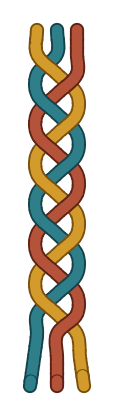
Three-Strand Flat Braid
A flat braid of 3 strands.
●○○ Easy - Hitches
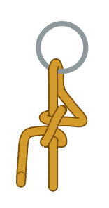
Two Half Hitches
A turn through a ring or round a post, then two half hitches round the standing part, both the same way.
●○○ Easy - Splices & whippings
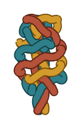
Back Splice
Finishes the end of a three-strand rope without whipping: the strands are crowned, then each is tucked back down the rope against the lay, over one strand and under the next..
●●○ Intermediate - Hitches
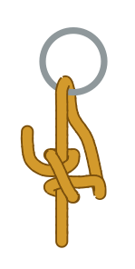
Buntline Hitch
Two half hitches tied back toward the ring instead of away from it, so the second hitch is trapped inside the first.
●●○ Intermediate - Braids & sennits
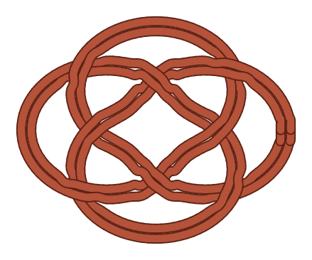
Carrick Mat
The carrick bend’s weave closed into a flat oval and followed round twice.
●●○ Intermediate - Binding knots
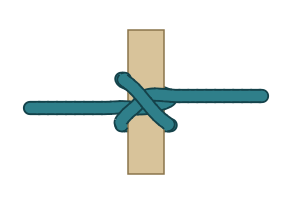
Constrictor Knot
A clove hitch with an extra tuck, which locks the two ends under the crossing turn.
●●○ Intermediate - Bends
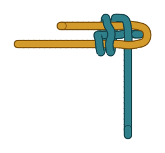
Double Sheet Bend
A sheet bend with a second turn of the thinner rope round the bight.
●●○ Intermediate - Braids & sennits
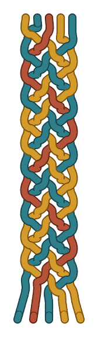
Five-Strand Flat Braid
A flat braid of 5 strands.
●●○ Intermediate - Hitches
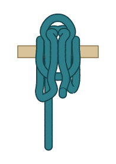
Highwayman’s Hitch
A quick-release hitch on a rail made only of bights: one bight round the rail, a second through it, and a third through the second.
●●○ Intermediate - Braids & sennits
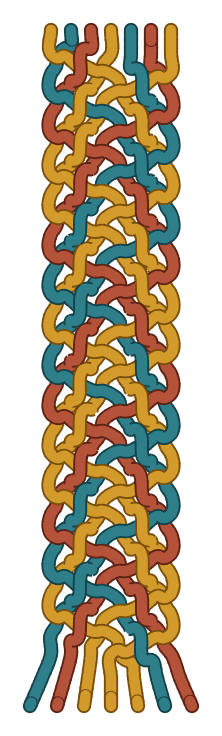
Seven-Strand Flat Braid
A flat braid of 7 strands.
●●○ Intermediate - Binding knots
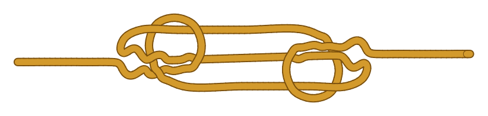
Sheepshank
Shortens a rope without cutting it: the rope is folded into a Z and each end of the fold is held by a half hitch made in the standing part.
●●○ Intermediate - Braids & sennits
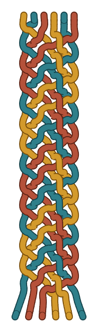
Six-Strand Flat Braid
A flat braid of 6 strands.
●●○ Intermediate - Binding knots

Surgeon’s Knot
A square knot with an extra twist in the first half.
●●○ Intermediate - Binding knots

Surgeon’s Knot with Second Tuck
The surgeon’s knot with the extra twist in both halves.
●●○ Intermediate - Splices & whippings
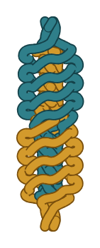
Short Splice
Joins two three-strand ropes end to end: the ends are married so their strands interlock, then each rope’s strands are tucked into the other rope against the lay.
●●● Advanced